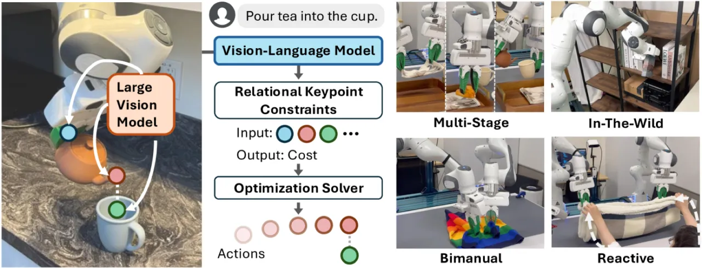
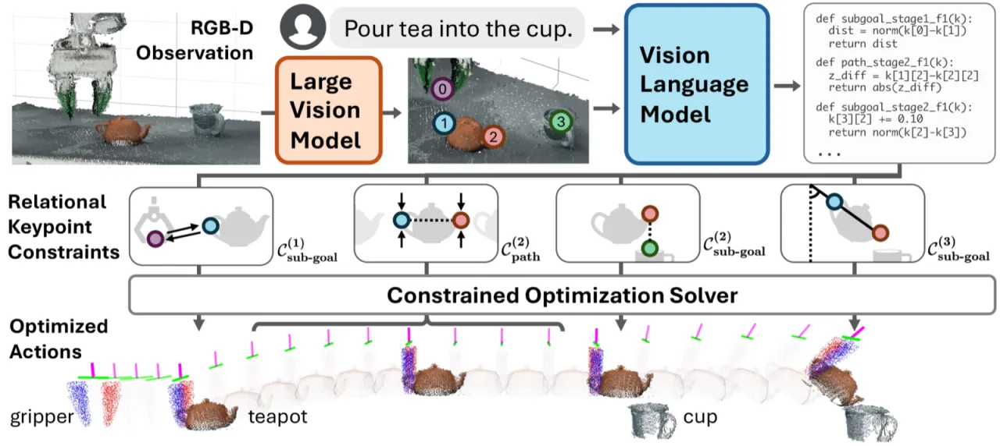
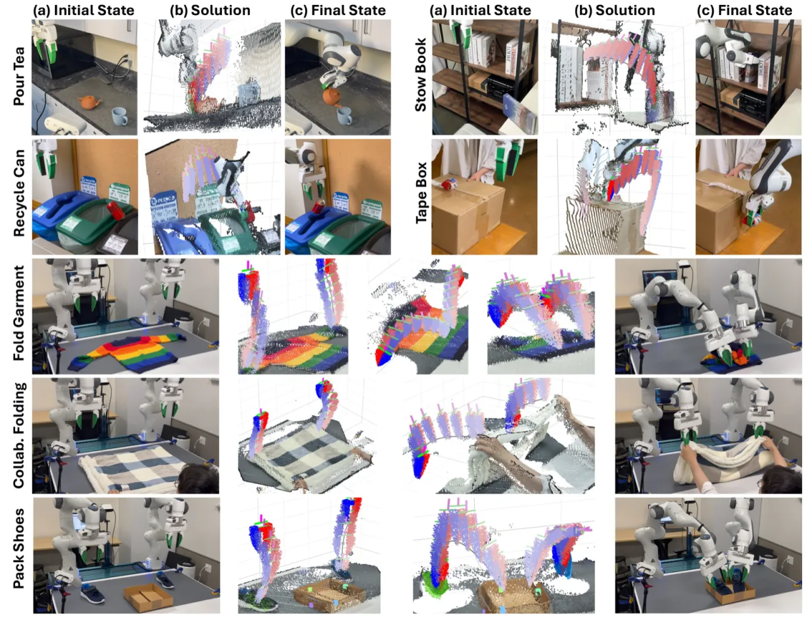
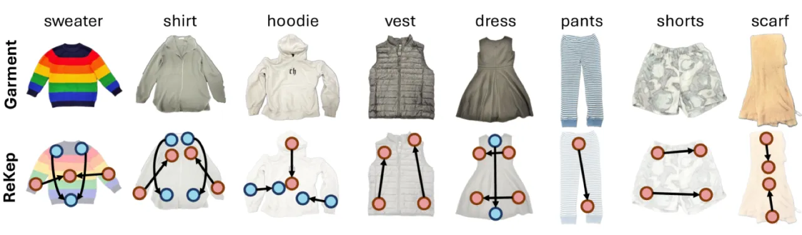
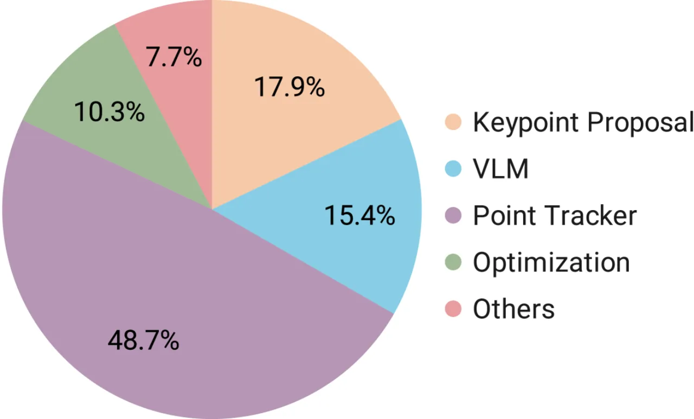

ReKep 将机器人操作任务表示为作用于三维关键点的关系约束函数（Python 程序），由 GPT-4o 结合 RGB-D 观测自动生成，再经分层优化求解机器人动作。无需任务专属训练数据，即可完成多阶段单臂与双臂操作，并具备实时响应外部干扰的能力。
机器人操作任务涉及多阶段、双臂协作、以及与动态物体的复杂空间关系。现有方法要么依赖大量任务专属训练数据，要么难以对操作过程中的接触关系做精确时空建模，在面对多样化场景时泛化能力有限。
"We present ReKep, a visually-grounded constraint representation for robotic manipulation … [which] automatically generates constraints from language instructions and RGB-D observations using a vision-language model, which are then solved by a hierarchical optimization procedure."

ReKep 的核心是将操作任务分解为若干阶段（stages），每个阶段包含两类约束：在阶段末必须满足的 sub-goal constraints 和在整个阶段过程中持续满足的 path constraints。约束函数以 Python 程序形式表达，接收关键点的三维坐标并输出数值代价，由 GPT-4o 根据语言指令和 RGB-D 观测自动生成。

使用 DINOv2 进行 patch 级特征提取，双线性插值到原始分辨率后，结合 Segment Anything（SAM）获取物体掩码，再用 k-means（k=5）对特征聚类得到语义关键点。关键点以三维 Cartesian 坐标表示，直接对应操作中有意义的部件（把手、壶嘴、杯口等）。
将叠加了关键点标记的 RGB 图像与自然语言任务指令共同输入 GPT-4o，模型输出包含 NumPy 操作的 Python 约束函数。sub-goal constraint 定义阶段目标（如壶嘴与杯口对齐），path constraint 定义过程限制（如避免碰撞）。
两层优化：首先以 Dual Annealing + SLSQP 全局搜索满足 sub-goal 约束的末端执行器位姿（约 1 秒），随后以局部优化器在满足 path constraint 的前提下生成运动轨迹（约 0.1 秒每步）。前向模型假设末端执行器与被抓关键点之间刚性连接，每 0.1 秒由视觉重跟踪更新关键点位置，实现实时感知-动作闭环，频率约 10 Hz。

在真实机器人平台上评测 7 个任务（每任务各 10 次），对比基线为 VoxPoser（zero-shot 代码生成规划）和 Auto-Annotated（使用 GPT-4V 自动生成关键点标注的改进版本）。另设扰动条件测试（外力干扰）以评估反应式恢复能力，并在 8 类服装折叠任务上测试双臂泛化。
| 任务 | VoxPoser | Auto-Annotated | ReKep（本文） |
|---|---|---|---|
| Pour Tea（倒茶） | 0/10 | 3/10 | 8/10 |
| Recycle Can（回收易拉罐） | 3/10 | 6/10 | 8/10 |
| Stow Book（收纳书本） | 0/10 | 3/10 | 6/10 |
| Tape Box（封装纸盒） | 4/10 | 7/10 | 8/10 |
| Fold Garment（折叠衣物） | 0/10 | 5/10 | 6/10 |
| Pack Shoes（整理鞋子） | 0/10 | 3/10 | 5/10 |
| Collaborative Folding（双臂协作折叠） | 0/10 | 4/10 | 7/10 |
| Overall（总体） | 10.0% | 44.3% | 68.6% |
| 扰动任务 | VoxPoser | Auto-Annotated | ReKep（本文） |
|---|---|---|---|
| Pour Tea (Dist.) | 0/10 | 2/10 | 4/10 |
| Tape Box (Dist.) | 2/10 | 3/10 | 5/10 |
| Collaborative Folding (Dist.) | 0/10 | 3/10 | 5/10 |
| Overall（总体） | 6.7% | 26.7% | 46.7% |


错误来源分析（图 4）表明，点跟踪失败是系统瓶颈，主要因操作过程中存在"heavy intermittent occlusions"。约束生成（GPT-4o 的输出质量）与优化求解失败（局部极值、不可行问题）构成另外两类主要错误源。
前向模型假设末端执行器与被抓关键点之间保持刚性连接（rigidity assumption between end-effector and grasped keypoints）。论文指出此假设仅在约 0.1 秒的短时间窗口内有效，之后须由视觉重跟踪更新关键点位置。对于柔性物体或接触复杂的场景，该假设会引入较大误差。
系统依赖持续的关键点视觉跟踪。操作过程中"heavy intermittent occlusions"（频繁的间歇性遮挡）是目前最大的单一失败来源（见图 4 错误分解），限制了在杂乱或自遮挡场景中的可靠性。
当前框架"assumes a fixed sequence of stages for each task"。若需在任务执行中途以不同阶段顺序重新规划，则须以高频重新运行关键点提议和 VLM 推理，带来显著的计算瓶颈，实时性无法保证。